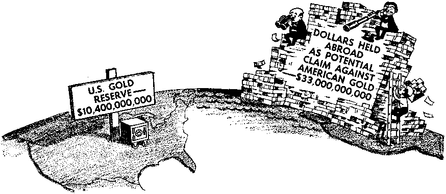

What to Do When You Are Surrounded with Violence ■
Why Is the Dollar in Trouble?
Missionary Work in Saigon
The Olympic Games Come to Mexico
THE REASON FOR THIS MAGAZINE
News sources that are able to keep you awake to the vital issues of our times must be unfettered by censorship and selfish interests. “Awake!" has no fitters. It recognizes facts, faces facts, is free to publish facts. It is not bound by political ties; it is unham' pered by traditional creeds. This magazine keeps itself free, that it may speak freely to you. But it does not abuse its freedom. It maintains integrity to truth.
The viewpoint of “Awake!" is not narrow, but is international. "Awake!" has its own correspondents in scores of nations. Its articles are read in many lands, in many languages, by millions of persons.
In every issue "Awake!" presents vital topics on which you should be informed. It features penetrating articles on social conditions and offers sound counsel for meeting the problems of everyday life. Current news from every continent passes in quick review. Attention is focused on activities in the fields of government and commerce about which you should know. Straightforward discussions of religious issues alert you to matters of vital concern. Customs and people in many lands, the marvels of creation, practical sciences and points of human interest are all embraced in its coverage. "Awakel" provides wholesome, instructive reading for every member of the family.
“Awake!" pledges itself to righteous principles, to exposing hidden foes and subtle dangers, to championing freedom for all, to comforting mourners and strengthening those disheartened by the failures of a delinquent world, reflecting sure hope for the establishment of God's righteous new order in this generation.
Get acquainted with "Awake!" Keep awake by reading "Awake!"
Published Simultaneously in the Units® States by tub WATCHTOWER BIBLE AND TRACT SOCIETY OF NEW YORK, INC J17 Adams Street Brooklyn, N.Y. 11201, U.S.A.
and in England
WATCH TOWER BIBLE AND TRACT SOCIETY Watch Tower House, The Ridgeway London N.W. 7, England N, H. Knorr, President Grant Suites, Secretary
Average printing each issue: 5,100,000
Sd ■ copy (Antia I It, 5c; Soatb Afrltt. 3'/,c)
Yearly subscription rates
Offices for semimonthly edition's
Canada, 150 Brldgeiand Ave., Toronto 1&, Ont. Si Eniland, Wateh Tower House,
New Zealand, 621 Now North Rd., Auckland 8
South Africa, Private Bax 2, P.O. Elandttfontein, Tri. 70u
CMonthly editions cut half the above rate*.) RamltUnaei tor sutucripttona should be sent to the office in your country. OtherwiH send your remittance to Brooklyn. Notice of expiration la scut at le&rt two iuues before HUbacriptlon expires,
The Bible translation reiiiarly used In "Awake!” Ji ths Ne When other transJatfans an i
iiii^™ tn ini'— k-
Now published tn 26 languages Bemlmcnthly—Afrikaans, Cebuano, Danish, Dutch, English, Ffctjish, French, German, Greek, Iloko, Italian, Japanese, Korean, Norwegian, Portuguese, Spanish, Swedish, Tagalog Zulu.
Mcfltbty—Chinese, Clny&nja, HiHtiaynOn, Malayalam, Polish, Tamil, Ukrainian.
CHANGES OF ADDRESS ihnld reach hj thirty days bofara yw uvlng date. Give ■» your ofd and new addrtm (If pocclblc, yoar old address label), Write WatcR Tower, Wateb Tower House, The Ridgeway, London N.W. 7, England.
Enured as second-class matter at Brooklyn, N.Y. Printed' In England
World Translation of the Holy Script era, 1961 edition. »f, this It clearly marked.
CONTENTS
What to Do When You Are Surrounded
The World’s Wondrous Waterfalls
The'Apple Tree's Bid for Kingship
The Olympic Games Come to Mexico
“Your Word Is Truth”
“ft is already Ilie hour for you to awoke.” 0k
—-Romans 13:11
Velums XLIX
London, England, August S, 1968
Number 15
WHAT TO DO
can you do when surrounded by violence? Really, the wisest, most practical counsel^ found in a source few persons have thought to consult—the Bible. Yes, the Bible outlines many principles which, if applied in one’s life, will serve as a protection in these critical times.
How can you protect yourself? What precautions are wise to take?
DURING 1967 over 3,750,000 major crimes were committed in the United States, which is one every eight and a half seconds!
Just since 1960 major crimes have increased 88 percent, while the population has grown only 10 percent. That means crime is rising nearly nine times as fast as the population! Many other countries are experiencing similar rises in crime. Truly, we are surrounded by violence.
Without doubt this is the time of which the inspired Bible prophecy foretold: “But know this, that in the last days critical times hard to deal with will be here.” (2 Tim. 3:1) In some places it is so critical that it is unsafe to walk the streets alone, even in broad daylight.
How can you protect yourself and your property in these dangerous times? What
For example, the Bible urges persons to apply the fruitage of God’s spirit in their lives, including “mildness, selfcontrol.” (Gal. 5:22, 23) Also, the principle is given in the Bible: “An answer, when mild, turns away rage, but a word causing pain makes anger to come up." —Prov. 15:1.
Not only will your relations with others improve by applying such Bible principles, but you can also safeguard yourself from violence. To illustrate: In Newark, New Jersey, not long ago, a man was forced to brake his car to a sudden halt at North Sixth Street and Delavan Avenue when an oncoming driver cut in front of him. The man did not conceal his irritation, but shouted: “Road hog!” This he followed with an obscenity. He exercised no selfcontrol; his answer to the inconsiderate act was anything but mild. And what was the result?
His pain-causing word did indeed cause anger to come up, just as the Bible said it would. The newspaper account says: ‘The rbadhog answered the shouts with one blast from a shotgun, hitting [the driver] on the left side of the face and killing him instantly.’’ How much wiser it would have been to apply the Bible counsel to control oneself, to answer mildly!
In this tension-filled world many people are like a high explosive. All they need is a spark to set them off. But mildness will serve to calm them down, and prevent them from becoming enraged and perhaps hurting you.
It may be that you are jostled on a crowded bus or subway, or another person accuses you of bumping him. The first inclination may be to reply harshly, or even shove back. Often this is what people do. But it is not the wise response. It does not create goodwill, nor does it contribute to your safety.
To the contrary, it can provoke latent violence, as in the recent case when two men jostled each other on a New York City subway train. A quarrel erupted, and one man pulled a knife and slashed it across the other’s face. In retaliation, the injured man drew a gun and fired into the other man’s stomach. How tragic! Especially since the trouble could so easily have been avoided if one of the men would have answered mildly.
Significantly, studies have revealed that a major number of crimes are provoked in some way by the victim, or at least could have been prevented by a mild response. As one writer, who reviewed scores of crimes, put it: “What people have to fear most from crime is in themselves.”
Truly, then, the Bible gives the wisest, most practical counsel on how to protect yourself in these critical times. It is not a sign of weakness to be mild, as many persons seem to think. Rather, to control yourself under provocation, as the Bible urges, reveals real inner strength. It can safeguard your life.
The Bible also states the principle: “Pride is before a crash.” (Prov. 16:18) It simply is unwise to be proud, refusing to acknowledge that you may be in error. Especially can it be dangerous today when there are so many quick-tempered people.
Even if you feel you are in the right, it certainly is not amiss to say humbly that you are sorry, and that you will try to be more careful next time. Usually the other person right away will calm down. Thus, the matter generally can quickly be settled peacefully, thereby avoiding an eruption of violence. ‘
This certainly, is illustrated by what happened to a young woman who bumped into another woman on a Bronx, New York, sidewalk one summer night. The older woman demanded an apology, but the young woman refused to give it. Pride impaired good judgment. And so a quarrel developed. Eventually the older woman pulled out an automatic pistol and shot the young woman fatally in the chest.
If only she would have humbly apologized—if she would have sought quickly to settle the complaint against her—she would not have been the victim of violence. But she was too proud to apologize. It meant sudden death for her.
It should not be concluded that these are unusual incidents. To the contrary, in a recent year the New York City Police Department revealed that the most common cause of murder was quarrels or angry disputes. Furthermore, 147 of the murders, or more than one in five, were of persons who got into heated arguments with their relatives. Arguments, especially between husbands and wives, led to violence, twenty-seven men being indicted for killing their wives during quarrels and sixteen women for murdering their husbands. And this in just one city, in one year!
Just think of the violence that could have been prevented if this Bible counsel were heeded: “Let a rotten saying not proceed out of your mouth, but whatever saying is good for building up as the need may be, that it may impart what is favorable to the hearers. Let all malicious bitterness and -anger and wrath and screaming and abusive speech be taken away from you along with all injuriousness. But become kind to one another, tenderly compassionate, freely forgiving one another just as God also by Christ freely forgave you.’’—Eph. 4:29, 31, 32.
Additional Bible principles that can safeguard your life deal with precautions to take to avoid trouble. For example, the Bible says: “The shrewd one considers his steps.’’ (Prov. 14:15) Also, it encourages: “Before the quarrel has burst forth, take your leave.”-—Prov. 17:14.
To consider your steps shrewdly will involve avoiding places where danger is likely. For instance, use well-lighted, well-traveled streets, rather than poorly lit and infrequently traveled ones. Also, avoid bands of youths loitering on street corners, perhaps crossing over to the other side of the street a block before coming to them. Do not go to parks, ‘lovers’ lanes,’ or other lonely spots after dark, even avoiding such places during daylight hours if they are not well traveled. Nor is it shrewd to display money publicly, or to wear costly clothing or jewelry if you are in a high-crime-rate area.
For violating Bible principles, either knowingly or unknowingly, many have paid with their lives. For example, when a youth was noisily making insulting remarks on a New York subway train recently, a man ordered the noisy one off the train. However, the youth returned through another door and plunged a knife into the man, killing him. How much better if the man had ‘taken his leave,’ perhaps going to another car, rather than allowing this fatal quarrel to burst forth.
A similar Bible principle that can safeguard your life advises: “As one grabbing hold of the ears of a dog is anyone passing by that is becoming furious at the quarrel that is not his.” (Prov. 26:17) Just as grabbing the ears of a dog can cause the dog to turn on you and bite you, so becoming involved in the quarrel of others can be dangerous.
Not long ago, for example, three girls and two young men in a New York City bus station were arguing. A middle-aged man interfered, telling the men to leave the girls alone, though he did not really know what had started the quarrel. He became involved in a quarrel not his. Angered, the young men turned on him, and fatally stabbed him with a knife.
How beneficial it would have been for the man to have followed the Bible principle! But what if another person is in real trouble? Rather than taking sides, and so judging the situation without knowing the facts, it would be wise to call the police.—Prov. 18:13.
If riots or shootings .flare in or near your neighborhood, will you take to the streets to become involved, or go out to see what is going on? The Bible advises not to ‘grab hold of it,’ not to become involved. The wisdom of this advice is emphasized by the incident of the crazed gunman who climbed atop the tower on a Texas campus and began shooting people. A newspaper reported: “Incredibly some people rushed out for a. look. A boy and a girl did . . . She was fatally shot. Her boy Triend leaned over to help. He was shot dead.”—The National Observer, August 8, 1966.
What an unnecessary tragedy! Ignoring Bible advice was disastrous. These youths revealed themselves to be inexperienced, unwise, as the Bible proverb explains: “Shrewd is the one that has seen the calamity and proceeds to conceal himself, but the inexperienced have passed along and must suffer the penalty.”—Prov. 22:3.
Yet another Bible principle that may save your life was given by Jesus Christ, when he said: A person’s “life does not result from the things he possesses.” —Luke 12:15.
With the increase of crime, there is the ever greater possibility of being confronted at gunpoint or knifepoint by a person demanding your money. Will you resist? WiH you fight to save your money, and perhaps lose your life? Your life is of so much more value than material possessions. It is not worth risking it.
A case reported in the New York Times early this spring emphasizes this fact. “A member of a Bronx Elk’s Club was stabbed to death early yesterday while returning home from a weekly meeting,” the report said. “The victim’s wallet and watch had not been taken, but the police believe he was stabbed fighting off a mugger.” But of what value are wallet and watch when you are dead?
It simply is poor judgment to grapple with an armed criminal, who often is trained in the use of weapons. The criminal is likely to become infuriated by your resistance, and .brutally beat or kill you. The New York Daily News reported such an incident recently: “The two bandits entered the store and produced a pistol, but [the storekeeper] refused to cooperate. Slugged on the head with the gun, he fought back . . . However, the man with the pistol turned and fired one shot, hitting [the storekeeper] in the stomach.” How much better it would have been for the man to have heeded the Bible principle!
One of the most shocking aspects of the increase in crime is the rise in forcible rapes. In 1967 more than 27,000 were reported in the United States, for an increase of over 60 percent since 1960. However, according to authorities, only about one in three or one in four is actually reported. Therefore, the real total may be close to 100,000 rapes a year. Think of that. A forcible rape about every five or six minutes in just one country! How can a woman protect herself?
The Bible again has some very pertinent and valuable counsel. It advises “women to adorn themselves in well-arranged dress, with modesty” (1 Tim. 2:9) Also, it emphasizes that when a woman is confronted by a rapist she should scream. —Deut. 22:23-27.
Certain modem styles of dress are without doubt ah important factor in the shocking increase in forcible rape. A woman who wears suggestive attire is only inviting trouble, whether she realizes it or not. Many men accept such immodest dress as an invitation to sexual advances. And, really, is not that one of its purposes? Commenting in this connection, Newsweek of November 13, 1967, said:
“Fashion designer Mary Quant, mother of the miniskirt, tells it as it is, or at least the way she sees it: 'Am I the only woman who has ever wanted to go to bed with a man in the afternoon? Any law-abiding female, it used to be thought, waits until dark. Well, there are lots of girls who don’t want to wait. Mini-clothes are symbolic of them. So are cosmetics that seem natural and stay on rlgm into oea ana out again, Because mat's the point. All this decoration is put on in order to seduce a man to bed,’ ”
So even the designer of the miniskirt notes that one reason for wearing these clothes is to seduce a man to bed. And it is a’fact that watching women who wear immodest clothes has often drawn a man into lustful action. Thus, heeding the Bible principle to dress "with modesty” will serve as a genuine protection to a woman.
At the same time, too, a woman should be careful that she does not unwittingly invite an attack by carelessly leaving the shades or curtains open while she ’undresses for bed. The same danger is present if she makes it a habit, when she can be seen from the outside, to run around the house or yard scantily attired.
But what if, despite the precautions taken, you are confronted by a rapist? What will you do? Submit to him? The Bible counsel in this instance is to resist —to scream. Authorities recognize this as the wisest thing to do. Paul Boesch, author of the book Lady Protect Yourself, pointed to the horrible consequences to women who failed to do so, writing:
"If a man is vicious enough to commit rape, how do you know just how far his twisted mind is out of focus? If you could read some of the unprintable, unspeakable things I have read, or visit the homicide office Of your police department, you would know there is only one answer—to resist with everything that’s in you....
"You can scream, and by all means do so. Some women fear that screams will only madden the attacker. But face the facts. How do you know he won’t kill you if you don’t scream? He may say, ‘Don’t scream or
I’ll kill you, but you can’t bargain with an attacker.”
Yes, what has proved the soundest advice is that contained in the. Bible—for a woman to scream for all she is worth if she is attacked by a rapist.
Thus the key to protecting yourself successfully from criminal'violence is to heed Bible principles. In them is found divine Wisdom, yes, the wisdom of the grand Creator. He alone can provide the guidance needed to cope with these critical ‘‘last days.” (2 Tim. 3:1) Therefore, the thing to do is to become acquainted with His Word the Bible, and to put your trust in its teachings.—Prov. 3:5, 6.
That same Word of God provides bright hope for the future. It assures us that God’s kingdom will soon bring in a new system of things free from lawlessness. Yes, what man has proved incapable of bringing about, Jehovah will soon provide for the blessing of all His law-abiding servants.
Therefore, learn God’s will. Abide by his laws. By so doing you will enjoy the peace of a grand new era when not a lawbreaker will be left on earth. The Bible prophecy gives this very assurance, promising: “The wicked one will be no more; and you will certainly give attention to his place, and he will not be. But the meek ones themselves will possess the earth, and they will indeed find their exquisite delight in the abundance of peace.”—Ps. 37:9-11.
The Amazing Amazon River
♦ This principal river in South America contains more water than the Egyptian Nile River, the American Mississippi River and the Chinese Yangtze River put together. It drains an area that is two-thirds as large as the United States. At its mouth it is about miles -wide. In some of its upstream locations it is more than 350 feet deep.
ft .DOlLiffi />? 1 f I*9b
regarded as being 'CtJ { 1MW 's aTr,nn<i
ood as gold, the /y. I . Round steak was 36
n dollar is now in ('"'x a Pound; now it is
trouble. This was \ 'X $1-00 a pound. A i
hown by the fren- lightweight suit cost
LONG regarded as being as good
American dollar is now in serious trouble. This was clearly shown by the fren-
zied buying of gold on the /VW/ Vs* European gold markets *" early this year. W ///
What does this mean for h the housewife when she // _ goes to buy groceries and n| 1 H
clothing for the family?
What does it mean for the man of the house who earns the family income? What does it mean for the country as a whole?
One of the circumstances that have led up to this trouble has been affecting families for many years, and that is inflation. Are you aware of how much you have been hurt by it and how it has been undermining confidence in the dollar?
Since 1939 the dollar, on a nationwide average, has lost 60 percent of its purchasing power because of inflation. With many things that a family buys, however, the increase in prices has been much ip°re than 60 percent.
In 1939 the New York Times sold for 3 cents a copy and the Sunday edition for 10 cents, but now the price is 10 cents for the daily edition and 50 cents for the Sunday edition. A quart of milk cost the housewife 12 cents in 1939, but now she may pay about 32 cents for it. Butter was 32 cents a pound’, now it is around 83 cents a pound. Bread was 8 cents a pound; now it is around 30 cents.
Round steak was 36 cents
; now it is about
$1.00 a pound. A man’s
lightweight suit cost $16;
W now it is $60 and more. ..... " Prices, of course, vary somewhat from place to V\ place in the country. But, & generally, inflation has ^USS==='' made -itself felt on the budget of every American family.
Inflation has been ope of the chief causes of the trouble that the dollar is now in. It has elevated the price of American goods so high in world markets that they are beginning to have difficulty in competing with cheaper foreign-made goods. Even within the United States many foreign products are underselling domestically made goods. In the steel industry, for example, there is grave concern about the rapidly rising amount of foreign steel coming into the country. Selling at a lower price, it is beginning to hurt the American steel industry.
Inflation is causing a gradual decline in exports for the United States. Imports, on the other hand, have been rising. Thus inflation is contributing to the steadily worsening deficit in the country’s international payments. This deficit means that more money is going out of the country than is coming into it. Falling exports and excessive government spending abroad as well as spending by tourists are the chief reasons for it.
To raise exports the obvious course is to reduce prices on American-made goods, but this can hardly be done if the cost of raw materials and labor keeps rising. So, some family wage earners may eventually find themselves without jobs or receiving lower than expected earnings when companies begin trimming production costs and the nation’s economy begins to deflate.
In a general way we might compare the situation of the United States with that of a .family that buys merchandise from a number of stores over a period of time using promissory notes. The family spends more than it earns, and has in the bank only one-third of the money needed to redeem its notes. The day will come when its creditors will lose patience and will demand payment. Being unable to pay all the notes, the family will likely go into bankruptcy.
Now, suppose the family could declare that their promissory notes were worth only one-third their face value. It could then pay off its creditors with the funds it has. But the creditors would no longer have confidence in the value of any future promissory notes from the family, and it would have lost its credit standing. The United States would be in the same situation if it devalued the dollar to make its gold reserves stretch farther.
The American dollar is, in a sense, a promissory note to pay a foreign government, upon demand, its value in gold. Whenever foreign governments want gold for the dollars that they hold they can turn the dollars in to the United States Treasury and receive gold in return at the specified rate of $35 per ounce. This American guarantee has given the dollar its stability of value in other countries.
For almost eighteen years dollars have been piling up in foreign countries. They now amount to $33,000,000,000, but the United States has less than one-third of the gold needed to redeem them. It is like the family with more promissory notes in the hands of creditors than money in the bank to cover them. Because the United States has put off taking the corrective measures that many economists say are necessary to eliminate the deficit, it has lost more than 50 percent of its gold reserve in the space of ten years. People in other countries are beginning to lose confidence in the dollar. Now the situation is so serious that the American government is being forced to do something to correct the situation.
Economic experts say that confidence in the dollar can be renewed if steps are taken to slow inflation and to reduce greatly the outflow of dollars to other countries. This involves substantial cutbacks in government spending.
We might compare these corrective measures with those that a farm family would have to take if it had been increasing its purchases and the prices of its products while its sales were declining. It would have to reduce its purchases so as to cut down on the outflow of money. It would also have to reduce the prices of its goods so they would be more attractive to buyers and more could be sold. This would increase its income. The wages of the workers would also have to be reduced to lower the cost of producing the products. This is what some persons believe the United States must do in order to reduce its deficit in international payments.
in
international payments are certain to
hurt individual Americans. But if these steps are not taken they will be hurt much more seriously.
Raising taxes is another necessary move, economists say, as that will help to put the brakes on inflation. Higher ‘taxes and a reduction in government spending within the United States will reduce the government’s huge domestic deficit, which is a major cause of inflation.
With higher taxes taking more money out of the pockets of the people they will have less to spend, and that should lower the demand for goods. This is supposed to slow the rise in prices, perhaps even reversing the trend somewhat. The demand for foreign goods by Americans should also lessen, helping the American deficit in international payments by lowering imports.
The situation is so serious that President Johnson emphasized that “the fabric of international cooperation upon which the world’s postwar prosperity has been built is now threatened.” He went point out that if that fabric is apart” the consequences will not be fined to foreign countries but will every American.”'
on to “torn “con-touch
Any corrective measures for strengthening the dollar by eliminating the deficit
Higher taxes mean less money for a family to spend. The man of the house will have to contend, not only with higher Federal taxes, but also with higher state and city taxes. So the housewife will need to exercise greater selectivity when she shops, passing up unnecessary luxuries and looking for the best prices. In fact, a family may have to forgo buying many of the things it may have wanted.
Higher interest rates on loans, another corrective measure for fighting inflation and strengthening the dollar, may mean that a family will not be able to afford to finance a new home or a new car. In fact, it may not even be able to get a loan because of a shortage in lendable funds and more stringent credit requirements. Some families were confronted with this situation in 1966, when credit was especially tight.
If the man of the house succeeds in getting a mortgage he will likely have to pay interest of more than 7 percent, and that rate may go higher in the months ahead. For a 20-year mortgage on $20,000 he will pay out $18,448 in interest if the rate is 7.5 percent. High interest rates can cause a slowdown in home construction, as was experienced in 1966. This can mean less work for carpenters, bricklayers, electricians and other people in the construction business. Many families may feel the effects of higher interest rates by having to pay higher rents.
Thus in a variety of ways families are being affected by the circumstances that have brought the dollar into trouble, and they can expect to feel more and more the results of the corrective measures that financial experts say are necessary to strengthen it. If these corrective measures fail or are too severe, a serious situation can develop for the entire country. The American economy might collapse into a recession or a shocking and painful depression. That could mean widespread unemployment, a big drop in wages, and economic hardships for a great many families. Economists are hoping that this will not happen.
The situation is without doubt a very grave one, and it was with good reason that William McChesney Martin, Chairman of the Federal Reserve Board, recently warned that America is “in the midst of the worst financial crisis since 1931.” In the months to come people in other countries will be watching intently as the United States struggles with its payments deficit and strives to shore up its wobbly dollar.
ABSORBING PAGANISM
ON MIDSUMMER each year Roman Catholics in Argentina celebrate St. John’s Day. A second birthday party is held for everyone named John, though it is supposed to commemorate the birthday of John the Baptist. Trees are pruned and the branches are used for bonfires, lighted on almost every corner on the evening before St. John’s Day. Tradition has it that anyone passing through the fire at midnight will not be burned.
At the same time of year the ancient Druids celebrated with blazing fires, and the custom is still perpetuated in certain parts of France, Switzerland, Ireland and Scotland, areas where Catholicism has long predominated. In Ireland it is still considered beneficial to jump over the fires when the embers have burned low.
A Roman Catholic monsignor was asked why priests lend their presence and blessing to such pagan celebrations for which there is no basis in the Holy Scriptures. Replied Monsignor Winsauer of Posadas, Misiones Province, Argentina: “It is easy. The day of St. John and the birthday of our Lord coincided with the two solstices. In ancient times, these dates were cause for pagan celebrations. When they [the pagans] were Christianized it was difficult to pull off the old practices, and the Church preferred to absorb the pagan fiestas into its own and not abolish them,”—Oonfirmado (Confirmed, weekly news magazine), Buenos Aires, July 9, 1965.
The monsignor added that “there is nothing wrong in Catholic priests’ promoting these fiestas”; however, in this he is not in agreement with the apostle Paul, who rejected the idea of absorbing any paganism, asking: “What fellowship does light have with darkness?”—2 Cor. 6:14-17.
SAIGON, as you know, is the capital cf a war-torn land, and the tide of war recently swept right into the city itself, yet Watch Tower missionaries continue to discharge their duties, bearing to the people from God’s Word comfort and hope. But how, you may ask, can they possibly carry on under those conditions of uncertainty and danger?
Normal conditions in Saigon for many months now have been quite different from the situation called “normal” in other lands. Lying in bed at night, the missionary must listen to the familiar sounds of bomb explosions and small-arms fire. Once in a while the bedroom window lights up from the flash of a flare illuminating the sky. Even the girls here, who are graduates of the Watchtower Bible School for missionaries, have learned to distinguish the caliber of weapons by the sound of the firing.
But the missionary does get to sleep, for he has had a busy day, and before he knows it, it is morning. A bell in the missionary home sounds at 6:30 a.m.—the signal that breakfast will soon be ready. But who is the cook? Why, one of the missionaries, for each one, male and female, has his turn in the kitchen. Where did they learn to cook? Some of them right there in the kitchen. And, of course, a good cookbook always helps.
Now another bell sounds. That tells all occupants of the missionary home that it is 6:55, with only five minutes to go before breakfast is due to begin. After a brief consideration of a text from the Bible and prayer, a wholesome breakfast is served and then—a full day’s schedule of activity.
But is it dangerous to go out of doors? Where will the missionaries go? It is said that the Viet Cong have agents all over the city, but what big city is not somewhat dangerous these days? And, of course, missiorfaries who are sincere about discharging their obligations to God and Christ put their faith in God for their protection.
In Saigon, with its over two million inhabitants, the missionary of the true God, Jehovah, recalls the compelling words of Jesus: “Yes, the harvest is great, but the workers are few.” (Matt. 9:37) And just as it takes regular meals of rice to keep the Vietnamese healthy, the spiritual food from God’s Word, the Bible, is vital if they are to grow strong and stay strong spiritually. So, the few workers in this southeast Asian field must keep at their God-given work consistently, without letup. Each missionary here has been assigned a section of Saigon, and it is his or her job to reach all people in that section. The store owners have to be contacted, as well as the teeming population of the winding back alleys. Houses may be oacupied by from two to fifteen persons, depending on the size or the means of the householder. And far and wide, on busy streets, on back roads, on tiny little lanes that are almost imperceptible, people are learning that there are missionaries for Jehovah in Saigon.
Despite the vast population, it is remarkable how people can remember names. Said one missionary: “The Vietnamese love to remember names. They will write yours down carefully, and you are sure they will forget it. But, when you visit the neighborhood again several months later, they will greet you at their doors using your name.” It is certainly a very friendly custom.
But, since not many people know English, how do the missionaries make out talking with the people? That is a good question. However, it must be remembered that a true missionary goes to the people, does not make them come to him. This means he must learn their ways, their customs, and, yes, their language, be it ever so difficult to grasp at first. It has many tones, and if the wrong emphasis or tone is placed on a syllable, it may alter the entire meaning of the word. So at the beginning the missionary must spend many hours daily at language study.
For the first few weeks he does not worry about vocabulary. He just concentrates on tones, and here his biggest help is his door-to-door ministry. He starts with short, memorized sermons and listens carefully to the idiomatic expressions used by householders. Reported one missionary: “At the start we would write the sermon down on paper, and we would try to read it to the person coming to the door. But they could not understand our words and would grab the paper from us and read it for themselves, and then not even return it to us. So we soon realized it was best to get the sermon into one’s head instead of on a piece of paper.”
In the missionary home, as a help, twenty new words in Vietnamese are discussed daily at the dinner table. Then each one endeavors to use these words in the house-to-house ministry. The townspeople are very patient and listen closely, seldom ever criticizing the many mistakes of the beginner. But errors have to be detected and corrected, for they can be quite embarrassing. “When I was new in the language,” another missionary reports, “I got in the habit of answering Yes to anything I did not understand. One day, when I was working with a local Vietnamese Witness we were invited to stop and talk to three young Vietnamese women. My companion later told me that I had answered Yes to such questions as; Do you have a wife? Do you have more than one wife? Would you like to have some more wives? Rest assured I no longer answer Yes to apything I cannot understand.”
Weather in Saigon presents quite a challenge to the missionary. There are six months of dry season, and then six months of rain, and does it ever rain! And local people can be noted taking advantage of the heavy rains. Many children in their “birthday suits" will run up and down in the rain to get themselves a good bath. Older people, when the rain pauses for a few moments, will run to the curb and bathe their feet in the water surging down the gutters. Car owners and motorcycle owners take advantage of this plentiful supply of water tp wash their vehicles.
Some of the back alleys have poor drainage, so much so that the missionary may find himself pedaling his cycle with water up to his knees in order to reach some homes. Or, if conducting a Bible study in some house when the rain starts, he may note the water gradually invading the house and swirling about his -feet. While the study continues, the household members may be lifting furniture to higher places, and by the time the study session concludes all may be sitting with their feet and legs in water over a foot deep. At this point a missionary girl is hoping she does not lose her shoes when she rises to go, and upon departing she is sure to see other people’s shoes floating down the alley.
To offset these discomforts, there is the warm hospitality of the people, and particularly during the rainy season. One cool, rainy day when two missionaries made a visit, they were invited in to sit down. A towel was brought so they could dry off. Then one of the girls was furnished with a fur coat to keep the chill off; the other was loaned a sweater. Finally, last but not least, comb and mirror were supplied. Said one of the girls later: “That was the first time I ever conducted a Bible study in a fur coat!”
At times the missionary may come to a house where there is only one chair available, and it will be offered to the visitor while the family, regardless of age, stand around. What to do under these circumstances? One missionary found it best just to place her literature bag on the chair and carry on the visit on a friendly level with the people.
The Vietnamese are always interested to learn why a missionary does not have any children. In fact, they become so concerned that they will even go so far as to offer a child for adoption, perhaps twins. It is quite new to them to meet someone who is willing to forgo husband, wife ana cnnaren ror me saKe or me Kingdom and its interests.
The missionary in Saigon is soon aware of the various religious factions that fight one another for political advantage. Demonstrations often end up in violent fights between these factions, and then the police have to move in and even use tear gas to suppress them. These situations at times interfere with the peaceful work of the missionary. One missionary told how one day she noticed all at once that everyone was running, some crying because of tear gas in the air. At the same moment she discovered that her bicycle tire had gone flat. A man in a nearby home, seeing her predicament, quickly ran out, pumped up the tire and told her to go at once. Children, too, were imploring her to leave. They wanted no harm to come to her.
On one occasion the religious demonstrators decided to fight it out in front of the missionary home. A tear-gas bomb hit the residence and saturated the front rooms with gas. The missionaries had to hurry into a back room, seal the door and windows, and wait until the air cleared. Another missionary happened to be out in the street when the tear-gas bombs fell. A store owner, noting her plight, invited her into his store for protection.
Missionary service removes one from the world around one in many ways. One learns to live a life apart from this world, concentrating time and attention on the work of proclaiming a new system of things soon to come, one that will bring deserving ones of all races peace and prosperity. True, as the worldly-minded engage in war all around the missionary, he cannot but be affected somewhat. But how he reacts to those conditions makes all the difference. How, for example, does he react to attacks such as those made upon Saigon and other cities in South Vietnam recently?
That Viet Cong offensive was full of surprises for Saigon. It started in the early hours of morning, with many points struck simultaneously. Within a few hours most communications were cut off. Electrical and water supplies were cut. Even the foodstuffs coming into the city were halted. Private houses were attacked and burned to the ground. Terrorists were everywhere, it seemed.
A missionary home occupied by nine active missionaries stands right in the middle of Saigon. The radio had given full warning about the attack and its aims. Right there and then the nine missionaries, from Canada, the United States and Australia, assessed their reasons for being there in Vietnam. Who sent them, and why were they there in Saigon? Was it not Jehovah who had sent them to extend life-giving knowledge of His purposes to the truth-hungry population? Then, it was to God they would look for his protection, and not to the strength and weapons of men.—Prov. 18:10.
Their decision meant possibility of great danger, but already they can report on Jehovah’s loving provision for their needs. As one of those missionaries wrote: “The local Witnesses have been nothing short of precious gems. During the first days of the attack they would take turns coming by to see us, and this at risk of their lives. They knew the secret places to buy food and would bring it to us. All the markets were closed down, of course.”
It is true that the dive-bombers came very close at times, and the missionaries have to be most careful as they leave the home. But, while things are upset for a time, they restrict their territory for preaching to relatively safe sections nearby. They do not venture into any of the smaller alleys at present, because this is where most of the Viet Cong hide out during the daytime. As soon as circumstances improve, they are all ready to move out into areas farther afield, where they know many of the people are awaiting additional visits.
So, while there are discomforts, inconveniences, yes, even dangers here in Saigon, they are as nothing compared to the satisfaction of seeing the fruitage of missionary labors. How gladdening to see one with whom you have studied the Bible for four or five years finally take his stand for God and Christ and join his missionary teacher in proclaiming the “good news” of the Kingdom to others! The hardships of seeding and watering and cultivating are forgotten in the joys of the harvest. “My joy is indeed complete,” exclaimed one missionary in Saigon, “now that this man (with whom he had studied four years) has joined me in the house-to-house preaching.” One Vietnamese woman studied for almost five years before joining in the door-to-door ministry; another studied for six years before taking the same step. But they have thoroughly grasped the Bible’s message and are eager to inform their neighbors.
So, in spite of all the obstacles, the life of the missionary in Saigon is satisfying. True, the bombs rumble and the rifles bark, but after a busy day talking to the people, not about war, but about peace soon to be everlastingly ushered in by God’s kingdom, the missionary can rest and sleep. He is happy in the assignment God has given him.
THE
WORLD'S WONDROUS
plunging into a steep-walled gorge nearly 200 feet below. So powerful and voluminous is it that a cloud of mist rises upward perpetually to water the region nearby. All the colors of the rainbow can be seen as the sunlight strikes the ascending water particles. With good reason this iridescent cascade has become one of the most durable tourist attractions on earth, drawing some two million visitors a year. What a wondrous sight!
Niagara is actually two falls, which are located on the eastern United States-Canadian border. Horseshoe Falls, on the Canadian side, is the largest, being 186 feet high and 2,950 feet wide. Over it descends the major part of the thirty-four-mile-long Niagara Riv
WATER is forever on the move. It pounds against the shore, it rises as mist, it descends as rain. But the most conspicuous of all moving water is the waterfall. Seething with energy, life and beauty, cascading water fascinates the beholder.
Waterfalls have individual traits. Some are low and voluminous, and speak of great force and strength. These are the most spectacular, for their noise and ferocity seem to dominate the area all around. Others are so high and slender that they appear to be unreal, losing form halfway down and disintegrating into fog and mist. Each kind has its appeal, and can increase one’s appreciation of earth’s loving Creator.
Probably the most famous of all is Niagara Falls. Its sheer force is awe inspiring. A wall of blue-green water falls at the rate of some 500,000 tons a minute, er, which connects Lake Erie and Lake Ontario. The smaller flow travels around the other side of a small island, and drops about the same distance. This section of the falls is located on the American side and is called American Falls.
To early Indians, the falls were part of their heritage. Legends grew up around them. They called them “thunder of the waters” in their Iroquois language, and it seems that when white men came to the continent, the Indians were not very eager to tell them about the falls. The first white man to report seeing the falls was the French missionary Louis Hennepin, who wrote of his visit in 1678.
At Yosemite Valley in the western United States are a series of perhaps the most famous high waterfalls in the world. At Vernal Falls the Merced River descends for 320 feet in a sheet of jade-green water to foam white among the boulders at its foot. Nevada Falls drops 594 feet, Bridalveil Falls descends 620 feet, the Slender Ribbon Falls makes a straight drop of 1,612 feet, and Yosemite Falls’ total descent is nearly half a mile! Truly these are beauteous wonder falls. They can indeed increase one’s appreciation of earth’s marvelous Designer.
As famous Bridalveil descends, it swings and sways and sings in the wind. The spray flying free of the falls fashions its own rainbows of misty beauty, and clothes the column of water in a gauzy veil. Thereby it seems to half fall and half float. On the other hand, Yosemite Falls seems to shoot right out of the sky. Its first bound over the lip of the precipice frees it of earthly bonds for several seconds as it plummets 1,430 feet in one sheer fall. Then it tumbles down through a small gorge to reach another brink from which it hurtles another 320 feet to the valley floor—a total drop of 2,524 feet.
However, one should not conclude that Niagara is the biggest waterfall in the world, or that those falls in Yosemite are the highest. No, there are even larger waterfalls than Niagara, and one that is so high that it dwarfs any of those in Yosemite.
In the interior regions of northern South America the Indians spoke of a waterfall thousands of feet high. However, white men thought this was just another legend. It was less than thirty-five years ago that it was discovered that such a wondrous waterfall really did exist.
Jimmy Angel was one of those perennial prospectors seeking gold and diamonds. While making an aerial reconnaissance in ■1935, he flew his tiny plane into a twisting canyon of Devil's Mountain; at least that was the name given it by the local Indians. It is located in the jungle called the Guinea Highlands in Venezuela.
Suddenly, between the ever-narrowing canyon walls, there appeared a magnificent waterfall gushing out of a rock fissure about two hundred feet below the rim of the rocky height. From the stone lips of this mountain spurted a river that cascaded 3,212 feet into the jungle below. Jimmy Angel guided his plane down perilously close to the jungle floor and made a rough calculation of the fall’s width. It was perhaps 500 feet at its base. Here was an amazing waterfall hundreds of feet wide and over seventeen times as high as Niagara! Imagine Jimmy Angel’s thrill He was apparently the first white man tt see the highest of the world’s wondrous waterfalls.
Returning home, Jimmy Angel invited his wife and a business partner to see his unique discovery. Circling the area, he spotted a likely landing site. But as the plane coasted to a halt its wheels became hopelessly mired in the soil. They must have immediately realized the danger of being trapped in unexplored territory. Air search for the missing party proved futile. Two weeks later, when all hope for their survival was about abandoned, they dragged themselves to safety. For this singular discovery and amazing survival, the government of Venezuela honored Jimmy Angel in 1937 by applying his name to the falls, calling it Angel Falls.
South America is blessed with waterfalls that are not only very high and picturesque but very powerful and voluminous. For example, the Tequendama Falls on the Bogota River in Colombia. Here the river narrows into a deep channel and hurtles itself some 650 feet to the depths below.
An early explorer, Alexander von Humboldt, observed: "The cataract forms an assemblage of everything that is sublimely picturesque in beautiful scenery. It is not one of the highest falls, but there scarcely exists a cataract which, from so lofty a height, precipitates so voluminous a mass of water.”
However, Kaieteur Falls in British Guiana is a yet higher waterfall, and carries an evCn greater volume of water. This magnificent cataract plunges in a single column of dazzling whiteness 741 feet into a basin below; then it makes a further drop of 81 feet—a total fall of 822 feet! The long journey to these falls on the Potaro River is rewarded by a truly wondrous sight. How marvelously the Creator has set in such perfect balance jungle, valley, mountain, sky and cascading waters! An Awake! correspondent describes the scene:
“We emerge from the forest onto a flat stony plateau, where we break into a run toward the booming noise. ... A rock ledge prbvides an excellent view, and cautiously we crawl to peer over the edge, where our eyes are led into a breathtaking panoramic sight of tropical jungle and twisting valley, cradled by sheer mountain ranges. On another rocky ledge about a quarter of a mile to the left we get another spectacular view, here seeing the full height of the falls in their beautiful setting of low mountains beneath a blue sky.”
The Paulo Affonso Falls on the Sao Francisco River in Brazil is a much larger waterfall, although not as high. It has been described as “motion gone mad.” Between canyon walls colored red, bronze, yellow, and black, the racing, turbulent waters gleam an extraordinary white. Then, suddenly, at terrific velocity, the river leaps some 260 feet into the mist and turbulence of the gorge below. This is one of the world’s major waterfalls.
But probably the best known and most famous of the South American waterfalls is Iguassu Falls on the boundary of Brazil and Argentina. It is often compared with Niagara Falls. And, although less torrential, its panorama of varied features excels the better known North American fafls.
The Iguassu River plunges headlong over a brink some two and a half miles wide, and with a maximum height of 237 feet. Thus, not only are these falls much higher and wider than Niagara, but during floodtime the volume of water is greater. During drought, on the other hand, no fewer than 273 separate waterfalls have been counted along its rugged brink.
Across most of its width the falls are broken into two sections by a ledge halfway down. Thus, the water drops in two stages, each more than a hundred feet in height. Many of the individual falls, in turn, are broken by smaller ledges, producing a fairyland spectacle of jagged rock draped with aquatic veils. At one point, however, the water plunges in an unbroken sheet from the brink to the gorge over 200 feet below.
What is particularly attractive about Iguassu Falls is its setting in a virgin tropical forest, featuring bamboo, palms and orchids. Here, too, are excellent vantage points. On a ledge halfway down in the gorge well-kept paths lead through a natural park of rushing waters and jungle growth to spots that give breathtaking views of the falls. How the heart is moved in appreciation to God for such beautiful sights!
Africa, too, has wondrous waterfalls. For example, Aughrabies Falls in South Africa. Here the mighty Orange River makes a majestic plunge of 450 feet into a foaming caldron. However, there are falls that excel all others in Africa, and rate among the most spectacular in the world.
In 1855 David Livingstone paddled down the Zambezi River in southern Africa. Perhaps the most amazing spectacle of all his exploring life awaited him. No white man had seen what he was about to see. Soon his ear caught the sound of a tor* rential roar; his eyes beheld clouds of white mist boiling up. As he mused on the exciting prospect, he landed on an island and found himself on the brink of truly magnificent waterfalls. The African aborigines called it “the smoke that thunders” because of the immense columns of spray and thunderous noise.
However, Livingstone named it Victoria Falls, after his queen of England.
These wondrous falls are slightly over a mile wide, and they plunge abruptly over the edge into an almost vertical chasm 350 feet deep. This means that they are both higher and wider than Niagara Falls. Islands on the lip of the precipice separate it into four principal falls. The most striking are the main falls, a half-mile sheet of foaming white and green water.
What is unique about Victoria Falls is that the opposite wall of the chasm stands only about 80 to 240 feet away, thus forming a mile-long trench. The waters rush wildly from each end of this trench, where the abyss is shallowest, toward the middle, seeking gscape from the imprisoning walls of the opposing precipices.
The largest waterfalls in the world are comparatively little known. They are neither the most famous nor the most beautiful. Volume of water alone is not what impresses most. On the Mekong River, which travels down through Cambodia and Vietnam to empty into the sea, there is a series of waterfalls known as the Khon. Although it averages about double the volume of Niagara and is about eight miles broad, the Khon’s total descent is only some seventy feet. However, there is a waterfall yet much larger.
ARTICLES IN THE NEXT ISSUE
• How Good Ara the Ten Commandments?
• Schizophrenia—a Mental Ailment That Is Not Hopeless.
* Africa Struggles Anew for Independence.
• Bethel's Busy Ministers Preach the Good News.
This is the La Guaira or Sete Quedas Falls on the Parana River between Brazil and Paraguay. It is a series of eighteen separate falls, the height of which is about that of Niagara. However, its volume rises to eight times that of Niagara during the rainy season! The force of the,cascading waters is so great that the earth trembles for miles around.
Edward C. Rashleigh, writing in the Journal of the Royal Geographical Society, says of Sete Quedas Falls: “It exceeds the combined mean volumes of Niagara, Paulo Alfonso, the Iguassu Falls, the Grand Falls of Labrador, the Victoria Falls of the Zambezi, and the Kaieteur (of Guiana) rolled into one.” But because the eighteen separate falls are spread over an areaj there is not an ideal vantage point from which to view them. Thus they are not as spectacular to behold as, for instance, nearby Iguassu Falls.
When a surging river hurls itself over a high precipice it indeed is a wondrous spectacle. Whether the falls are comparatively low and voluminous or are extremely high and slender, they are fascinating to behold. How loving of the Creator to adorn earth with these wondrous sights!
IN THE Bible appears an allegory about the trees of the forest looking for someone to be anointed king over them. (Judg. 9; 8-15) We, too, invite you to imagine a gathering of all the fruit trees for the purpose of choosing one' of them to be king.
Each tree came prepared to extol its own virtues. Lots were cast, and it so happened that the apple tree was given the opportunity to speak first. His remarks went something like this:
“Fellow citizens of the fruit-tree community: It seems necessary that we first of all establish a basis Or criterion by which to judge which of us deserves to be chosen as king. Undoubtedly that basis or criterion is the usefulness of any fruit tree to our owners and masters, the human race, not which tree is the tallest or the most beautiful. Certainly the great Creator did not endow us with the' capacity of bearing luscious fruits merely for our own benefit, that we might appear ornamental and that we might not die out. No, but as his Word states, God said to the first human pair: ‘Here I have given you all vegetation bearing seed which is on the surface of the whole earth and every tree on which there is the fruit of a tree bearing seed. To you let it serve as food.’—Gen. 1:29.
“This fact is further borne out by the instructions God gave to the nation of Israel in regard to waging warfare; they were never to cut down any fruit trees for military purposes. Yes, we occupy our peculiarly favored position by virtue of the fact that we are able to bear fruit for the benefit of man.—Deut. 20:19, 20.
“How can we determine which of us fruit trees has been of the greatest service to man? Well, which one has been the most popular with him? One simple way would be to note which fruit name comes up most frequently in his conversation. Another way is by noting which of us he has cultivated most extensively. Still another is by noting which fruit he prepares in the greatest variety of ways. And, then again, a determining factor could be which fruit serves the greatest variety of needs, in addition to being food. In all these aspects we apple trees feel that we are without peer.
“How often the very ^name apple appears on the tongue of humans is proof of its popularity. Thus ever so many other things are designated apples. The French call the potato pornrne de terre, meaning ‘apple of earth, even as do other nationalities. The tomato was long called ‘love apple.’ There is the rose apple and the apple rose, neither of which are apples; the same is true of the apple banana, the appleberry and apple mint. The pomegranate is an 'apple having many seeds.’ The forbidden fruit, that is, the fruit of the tree of knowledge of good and bad in Eden, has been called an apple, although no one actually knows what kind of fruit it was. And men speak of the pupil of the eye as the apple of one’s eye, meaning 'something highly cherished.’—Gen. 2:1517; Ps. 17:8, R8. .
“As for the apple itself, by way of introduction let us note that we apple trees belong to the rose family and our closest relatives are the pear and quince, all of which have five small seeds and a core and are known as pomes, literally, apples. Without a doubt we apple trees have been serving humankind from the beginning; archaeologists have found remains of apples going back to most ancient times. In the Bible there are repeated references to the apple and apple tree. Thus some 3,000 years ago King Solomon wrote that ‘a word spoken at the right time for it’ is ‘as apples of gold in silver carvings.’ He could have used some other fruit, but wisely he chose the apple to make his comparison. In his book, ‘The Song of Solomon,’ we read of a Shulammite maiden likening her lover to ‘an apple tree among the trees of the forest,’ and of her shepherd lover telling hew that her fragrance is like the fragrance of apples. Why? Obviously because these expressions were intended to be highly complimentary and therefore show the high esteem in which the apple was held.—Prov. 25:11; Song of Sol. 2:3; 7:8.
“Testifying to the usefulness of us apple trees to man is his widespread cultivation of us. No other fruit is grown so widely and so extensively. It is to be found in all six main continents, in North and South America, in Europe and Africa, in Asia and Australia. Only in the greatest extremes of temperature, as in the freezing Arctic and the burning tropics, does one not find one or more of our species. In fact, the apple tree is able to grow where no other fruit tree can survive; the temperature can go as low as 40 degrees below zero (Fahrenheit) without killing an apple tree.
“More than that, where is there another fruit that has more than 7,500 different varieties throughout the world? There are more than 2,500 varieties in the United States alone, although only about 100 are grown commercially. Among the better known ones in Europe and America are the Baldwin, the Bemerrosen, the Blenheim, Bramley’s Seedlings, Delicious (Red and Golden), Gravenstein, Grimes Golden, Jonathan, McIntosh, Northern Spy, Pearmain, Pippin, Roman Beauty, Wealthy, Winesap and York Imperial.
“And, interestingly enough, the most popular varieties, at least as far as the United States is concerned, are not the product of experimental breeding by horticulturists but were discovered accidentally. Yes, every now and then an apple tree will,send forth a shoot bearing a distinctive kind of fruit, previously unknown. If recognized and cultivated, it results in a fine new variety. This was the case with both the Red and Golden Delicious and the McIntosh. Because of this, these varieties have been called ‘Gift of God Varieties.’ How many other fruit trees have such characteristics and such a name?
“More than that, the apple family come in a great variety of colors, sizes, textures and flavors. Our colors range from a light yellow-green to an almost blackish-red. In size we vary from one to five inches in diameter. In texture we range from mealy to hard and crisp, and in flavor—well each variety has its own distinctive one, even as can be seen by comparing the Red with the Golden Delicious.
“Then again, it may be doubted whether there is any other fruit tree that can compare with us apple trees in the great variety of ways in which our product can be prepared or used for food in addition to being eaten raw. Man likes to drink the apple as apple juice, apple cider (either sweet or hard), and as apple brandy. In the United States about 80 percent of the apple crop is eaten raw or prepared by housewives, but in France the greater part of its very large apple crop is made into cider, which must have at least 3.2 percent alcohol content to be sold as cider. Then there are apple preserves such as apple jelly, apple butter, apple molasses (popular in Switzerland), and apple candy.
“And in what a variety of ways housewives prepare the apple! There are baked apples, apple dumplings, apple sauce, apple pie, apple crisp, and so forth, not to say anything of the use of apples in salads, such as the Waldorf salad, made with apples, celery and walnuts. In fact, one home economist published a book listing more than 200 ways in which housewives could make use of apples. And last, but not least, there is apple-cider vinegar, which many nutritionists recommend as being superior to any other kind of vinegar. Yes, how many other fruits are prepared in more than 200 different ways?
“Just another bit of evidence of the popularity of the apple with our human masters,” the apple tree went on to say, “is Switzerland’s Apple Break, a comparatively recent innovation. For the sake of the health of her people and to make the best possible use of a large apple crop some in the Swiss government are campaigning for what is called the ‘Pausenap-fel,’ literally, ‘Apple Pause.’ This, we are told, has really caught on. A full 800 tons of apples were assigned to the Swiss schools during the winter of 1966-67. Both school doctors and dentists are supporting the campaign. They complain that the youngsters have too much pocket money to spend and so buy too many candies and therefore suffer from decaying teeth even before entering school. In February a year ago the Swiss Dentists Association distributed 50,000 apples in fourteen cities to demonstrate the value of apples in combating tooth decay and pyorrhea.
“This apple idea has not only been used in schools, but it has found support in factories, banks and other business houses; from office boy to executive. The Americans have their ‘coffee break,’ the English their ‘teatime, and among the Swiss there are those that hope to make the ‘Apple Pause’ a national institution. Has any other fruit been thus honored?
“The facts about apples that the Swiss stress in seeking to popularize their ‘apple break* have been common knowledge for ever so long. Who has not heard the saying, ‘An apple a day keeps the doctor away’? Well, there is more than a grain of truth in that sajing. In fact, long before it was coined, the English had one like it: ‘Eat an apple ere going to bed, and you’ll make the doctor beg for his bread.’
“And did you know that modern research has shown that children who ate one or more apples a day had half as many cavities and one-third as many gum disorders as those who ate no apples? College students eating apples regularly were found to be far less bothered with the common cold and with tensions. Russian doctors experimenting with the -apple diet found that of 180 patients suffering from high blood pressure, 177 benefited and 90 were completely relieved after but three days on this diet.
“More than that, apple pulp, mashed apples without skins and core, either cooked or raw, and to which nothing has been added, has long been prescribed for diarrhea. The apple has an unusually large amount of pectin, which has a great affinity for water and which makes it so valuable in treating dyspepsia and intestinal disorders. Thus of 1,021 babies suffering from intestinal difficulties, 1,005, or more than 98 percent, were completely cured by using raw apple pulp. Powdered apple products, such as Aplona, have been found to be equally effective; this being also recommended where babies have trouble assimilating milk. On the other hand, apples eaten whole with skins are good for combating constipation. How many other fruits can serve for treating both constipation and diarrhea?
“Just why apples have such great medicinal value Dr. Ira A. Manville, M.D., Ph.D., onetime Clinical Instructor in Medicine and Director of Nutritional Laboratory, University of Oregon School of Medicine, explained in the publication New Developments in Nutritional Value of Apples. For one thing, the apple consists of about 85 percent pure water, a great help in regulating body heat. It contains about 13 percent carbohydrates, one of the easiest available sources of energy. It has about .4 percent fat and .5 percent protein, and is rich in such valuable minerals as calcium, phosphorus, potassium and iron. While other foods may have more iron proportionately, yet the iron in apples is far more assimilable than that of most other foods. Then again, the apple has a supply of acids, which are of great help for people suffering from a lack of hydrochloric acid in their stomachs and who are inclined to be anemic.
“According to this authority, ‘the apple, more than any other food with which we are acquainted, possesses in the highest degree’ an abundance of ‘therapeutic advantages. ... It is undoubtedly this that justifies the high place that it occupies in folklore and that it should occupy in our estimation.’
“Still more can be said showing* why the apple deserves to be the king of fruit-dom. Many among mankind have to watch their calories, and by making desserts with apples they will be getting far fewer of them. Also, many are very vitamin conscious, and we apples rate high in such vitamins as A, B, C and E. Hbwever, it must be admitted that certain of our families rate higher than others when it comes to vitamin content. And to mention just one more benefit there are the manifold medicinal values of apple-cider vinegar, not least of which is in coping with pregnancy problems. Truly, the apple is unique in the popularity of its name, in its being widely cultivated, prepared in a host of ways and, in serving a great variety of needs of man, our owner and master,”
After nearing this eloquent presentation by the apple tree the other fruit trees were reluctant to speak on their own behalf. Even the vine, which had come prepared to say much extolling the virtues of the grape, became diffident and chose not to speak. So it was that all the trees of the fruit-tree community unanimously chose the apple tree to be the king of fruitdom,
nipt in Roman times, deteriorating inti) professional circuses. Finally, according to an eleventh-century Greek writer, they ceased to be held in 394 C.E. It was the Roman Emperor Theodosius who abolished them, but not until they had been celebrated for over 1,100 years!
It was Baron Pierre de Cou-
Ry “Awake!” correspondent in Mexico
MANY architects have been busy for more than a year in Mexico City preparing courts, swimming pools, tracks, playing fields and a variety of other projects. All this new construction is for the XIX Olympic Games to be held in Mexico City from October 12 to 27, 1968. It is amazing how these games affect a city and attract world attention.
The first recorded Olympics were held in 776 B.C.E., or 2,743 years ago. The games were celebrated on the plain of Olympia, Greece, and at the beginning lasted only one day, but later extended for five days. They were held every four years. The winning athletes were given great honor and esteem, statues being erected to them, and some cities maintained them at public expense for life. The games became so important in the lives of the Greeks that their calendar was based on the games’ cycle, each four-year period being called an Olympiad.
Even after Greece declined as a world power, the games continued to be held, with* athletes from other lands participating. However, the games became very cor-bertin of France who inspired the Olympic revival, the first modern games being held in Athens, Greece, in 1896. Since then they have been held every four years, except for 1916,1940 and 1944, when they were canceled due to the world wars. Thus, 1968 marks the beginning of the XIX (19th) modern Olympiad, and the XIX Olympic games will soon begin; this year in Mexico City.
But what do people really know about what is being celebrated? Do they know that the games are connected with the way of worship of the ancient Greeks, and that the same event in Mexico is permeated with solemn religious spirit and emotionalism?
This is a fact. Even the magazine Selec-ciones del Reader’s Digest, November 1967, observes: “According to the Greeks, sports were something more than a game. The Greek gods were sport fans. Thus, participation in sports was almost like praying.”
Concerning Olympia, the place where the games were held, Normand in his Excursion d Olympic says: “It was not really a city; it was made up of a sanctuary with a main temple and secondary temples, and buildings for the ones in charge of the sacred service and for the persons who.attended.”
Also, The Encyclopedia Americana (1956), under the heading “Olympia,” comments: “A sanctuary of the Greek gods ... It was also the scene of the Olympic games. Here were collected thousands of statues of the gods and of victors in the games, treasure houses full of votive offerings, temples, altars . . .
“The excavations of Curtius [toward the end of the last century] covered practically all of Olympia, which was in no sense a town or even a village. It was simply one vast shrine covered with sacred edifices and buildings connected with them and the Olympic games. They show that the central part of the great enclosure was occupied by the great altar of Zeus, upon which were offered up the burnt sacrifices. This is a great block of undressed, unmounted stone, which stood in the open without covering or protection of any kind. When it was unearthed several layers of ashes of its victims were still lying upon it. It stood to the northeast of the great temple of Zeus, the ground plan of which was still compfete when excavated.”
The Olympic games were opened on their first day with animal sacrifices to the god Zeus, the one worshiped as supreme divinity among the Greeks. According to their beliefs, he was the one who caused an athlete to win or lose in the Olympic games. Here at Olympia was his magnificent temple, some 219 feet long and 99 feet wide, surrounded in its interior by marble-covered columns 75 feet high! The temple was decorated with a statue of Zeus in gold and marble and having a crown of olive leaves. The Olympic winners were also crowned with an olive-leaf wreath.
Thus the Olympic games were dedicated to the pagan Greek god Zeus, and were closely connected with his worship. Even today the games are closely linked with ancient Olympia and its pagan worship.
The Olympic fire, in particular, finds its origin in pagan worship of the past, when the Greeks worshiped the sun and fire as gods. The modem Olympic games are inaugurated by the lighting of fire in a huge receptacle, and it bums for the duration of the games. The source of this “sacred fire” is Olympia, Greece, where the rays of the sun are reflected through a glass or concave mirror to start it.
Thus, the fire for the Olympic games in Mexico City will be lighted from the “sacred fire” from Olympia, Greece. From Olympia, relay runners will bring the fire to Genoa, Italy. Then the route of the runners will take them to Barcelona, Spain. From there the fire will cross the ocean by ship, making a few stops en route, until it finally arrives in Mexico.
The place chosen for receiving the “sacred fire” is Teotihuacan, an archaeological zone situated twenty-nine miles to the northeast of Mexico City. From there it will be taken to Mexico City, and the Olympic Stadium there. Here, amid ceremony, this torch will be used to light the fire to inaugurate the XIX Olympic Games of 1968.
Interestingly, at Teotihuacan, the site where the “sacred fire” will be received in Mexico, fire used to be worshiped. There is a notable parallel between the sun and fire worship here and that among the ancient Greeks. The booklet Artistic and Cui-, tural Program of the XIX Olympic Games, put out by the Olympic organizing committee, says under the subtitle “Receiving of the Olympic Fire in Teotihuacan”:
“The Olympic Torch will be received at twilight amidst a spectacle of the masses inspired by the pre-Spanish ‘New Fire.’ This ceremony took place in cycles of fifty-two years, since it was thought that humanity would come to an end at the end of this lapse of time. The rising of the New Sun symbolized the renovation of humanity, assuring its existence for a new lapse of fifty-two years. This ceremony was carried out for the last time during the Aztec era, in 1507.’’
Describing the sacrifices in connection with this ancient fire worship, Victor W. Von Hagen writes in his book Los Aztecas, Hombre y Tribat “Finding a victim for the sacrifice [the Aztecs carried out their worship with human sacrifices], they opened the chest, pulled out the heart and lit a fire in the bleeding wound; all of the temple fires were Jit from this fire; and from this the inhabitants of all Mexico-Tenochtitlan took the new fire for the new year.”
There is certainly an amazing parallelism of the Aztec ideas to those of the ancient Hellenes, or Greeks. This makes one think that these religions had a common origin. And that they actually did is noted by the comment in the Diccionario En-ciclopddico Hispano*Americano concerning sun-worship: “It is probable that the hypothesis of this culture was born on the plains of Chaldea, from where it spread to Egypt, Greece, Scythia and even Ceylon and Mexico.”
So any investigator can see that the nodern Olympic games revive features of incient pagan religious rites. In this confection, the comment of The Encyclopedia Americana (1962), Volume 11, page 155, s of interest: “Each of the principal di-zinities was honored by at least one day )f special celebration in Greece; and the Olympic games of modem times are a reminder of the sacred festivals when young athletes from the different citystates competed, the Olympian games of antiquity being the most celebrated of these recurrent occasions.”
Because of the esteem with which the ancient Greeks held these religious games, they were known to suspend wars temporarily in order to hold them. Today it is hoped that the 1968 Olympics will accomplish a similar purpose, as noted in the Selecciones del Reader’s Digest: “We anxiously desire that the hopes of the whole world for peace, understanding and progress will find expression at this favorable moment: The Olympic Games.”
But will these games bring peace and unity? They did not in 1916, The Olympics were suspended, not the world war. The same was true in 1940 and 1944 during the second world war. And one thing is certain, after the games are over, sincere Mexicans as well as sincere people around the world will anxiously continue to desire peace. Many, many Olympic games have been celebrated and they have not changed man’s selfish ambitions.
Peace will not come about by means of festivals founded in ancient pagan worship. Rather, it will come by means of the heavenly kingdom that the true God Jehovah has established in the hands of his Son, Jesus Christ. This government is the only true hope for peoples who desire to live at peace and unity with their fellowman.—Matt. 6:9; Ps. 29:11.
• A study by the University of Michigan found that the leading cause of death among men between the ages of 16 and 24 is traffic accidents. While representing only one-eighth of all registered drivers in the United States, young male drivers are the cause of one-third of all the fatal automobile accidents. How carefully do you drive?
CHRISTENDOM’S doctrine of the Trinity claims that there are three, namely, God the Father, God the Son and God the Holy Ghost, who are all completely equal and who together make but one God. That three are one and one is three is admittedly a strange kind of mathematics. And if you ask for an explanation of this dogma by a theologian, he will probably inform you that it is all a mystery, something not understandable to the ordinary man. But what does the Bible say about it?
2 If we learn from the Bible that there is no such equality among the three, then the Trinity teaching falls to the ground. Certainly it is to the Bible we should go for a clearing up of this question, for one of Christ Jesus’ apostles wrote: “All Scripture is inspired of God and beneficial for teaching, for reproving, for setting things straight. ”—2 Tim. 3:16.
2 First, then, you will want to give attention to a rule that Jesus himself set forth. It is recorded at John 13:16: “Most truly I say to you, a slave is not greater than his master, nor is one that is sent forth greater than the one that sent him.” Did Jesus here mean that slave and master are equal, and that one sent as a messenger is equal with the one who sent him? Of course not. You will doubtless agree that he was teaching that the sender is greater than the one sent.
4 This understanding is borne out by Jesus’ own words in another place: “Just as the Father has sent me forth, I also am sending you.” (John 20:21) We know that Christ Jesus was and is greater than his disciples, and thus has authority to send them forth. By the same token it is clear that the Father is greater than the Son. In fact, we have the plain statement of Jesus: "If God were your Father, you would love me, for from God I came forth and am here. Neither have I come of my own initiative at all, but that One sent me forth.” (John 8:42) Then, wijth added emphasis, he declared: “The Father is greater than I am.”—John 14:28.
’Another principle that is easy to understand is that where authority is granted to or conferred on someone, then there is a source from which the authority comes. One vested with authority becomes an agent or empowered representative of the one from whom he derived authority. Thus police agents are authorized by law. They are not above the law, but are themselves subject to it. When they act beyond the authority conferred upon them, they are usurping authority and are no longer faithful to the law that granted them certain powers.
’Now, consider this frank declaration by Christ Jesus: “Just as the Father has life in himself, so he has granted, also to the Son to have life in himself. And he has given him authority to do judging.” (John 5:26, 27) Note especially those words we have italicized. Jesus truly recognized the heavenly Father as the source of all authority. (Matt, 20:23) As he said: “The very works that my Father assigned me to accomplish, the works themselves that I am doing, bear witness about me that the Father dispatched me.” (John 5:36) So Jesus received his work assignment from the Father,
7 Then, the very relationship of Father and Son rules out any equality between the two, for according to Bible teaching a son is to honor his father, and the father must instruct and counsel his son. (Prov. 4:1; Eph. 6:1-3) Even though Jesus Christ has been “appointed heir of all things” by his Father, this does not mean that he enters into unlimited possession of all things. (Heb. 1:2) No, for the heir can inherit fully only after the death of the testator. And since the Father is, in this instance, from everlasting to everlasting, that can never be. (Ps. 90:2) So, as his Father’s heir Christ Jesus will forever rejoice in the topmost privileges and responsibilities in his Father’s boundless realm; he has been given a name above every other name, excepting only his Father’s—Phil. 2:9-11.
8 One of the assignments that Jehovah God, the Father, has given to his beloved Son is to serve as executioner against all of God’s .enemies. Referring to this assignment, the Bible tells us: “He [Christ] must rule as king until God has put all enemies under his feet. As the last enemy, death is to be brought to nothing.” (1 Cor. 15:25, 26) So it is evident that the Son will wage the final and successful fight against God’s enemies in the power and strength supplied by his Father through God’s holy spirit or invisible active force. And then what?
s Here is the Bible’s answer; “When all things will have been subjected to him, then the Son himself will also subject himself to the One who subjected all things to him, that God may be all things to everyone.” (1 Cor. 15:28) God’s assignment to Jesus Christ to do judging during the thousand years of his Kingdom rule will have been loyally completed when Christ “hands over the kingdom to his God and Father,” as the Bible says he will.—1 Cor. 15:24; Rev. 20:4.
10 So, the only-begotten Son of God is not and never will be equal with his Father. Though, because of his loyalty, exalted to the second position in the whole universe, he will always be subject to the One who appointed him heir of all things. He will forever display to all other creatures the course that is pleasing to the Supreme Sovereign, Jehovah.
11 “Jehovah our God is one Jehovah,” wrote' the prophet Moses. (Deut. 6:4) “I am ascending to my Father and your Father and to my God and your God,” declared Jesus after his resurrection. (John 20:17) The course of wisdom, then, is to reject the Trinity and all religion that teaches such an unscriptural doctrine. Direct all your worship to Jehovah through the mediator that he provided, Christ Jesus.
^C!r "hrc n ■■ w r
r«Ct' rrhovc: wlc,-
(1 ) Briefly, what is the doctrine of the Trinity? (2) According to 2 Timothy 3:16, why can we confidently refer this question to the Bible? (3) At John 13:16, what rule did Jesus give, and what did he mean? (4) What words at John 8:42 and John 14:28 show that Jesus has always been subject to the Father? (5) Which is greater, the one who confers authority or the one who is granted authority? (6) At John 5:26, 27, what does Jesus say about the authority that he received? (7) Even though "appointed heir of ail things” by his Father, why, in harmony with Psalm 90:2, can Christ Jesus never assume his Father's position? (8) When Christ Jesus finally executes all of his Father's enemies, whose power and strength will bring him complete victory, as indicated at 1 Corinthians 15:25, 26? (9) What do we learn at 1 Corinthians 15:24, 28 about the future relationship of Christ Jesus and the Father? (10) What, then, must we conclude as to Jesus' future position? (11) How is the question "Is God a Trinity?" answered by Moses at Deuteronomy 6:4 and by Christ Jesus at John 20:17?
“Good News for AU Nations"
•§> Jehovah's witnesses began their 1968 series of four-day district assemblies in North America with seven simultaneous conventions on July 4-7. Each featured the timely Scriptural theme: “Good News for All Nations.” The president of the Watchtower Society, N. H. Knorr, spoke to a crowd of 6,205 persons at the assembly in Lewiston, Maine, on the subject "Man’s Rule About to Give Way to God’s Rule.” Among the more prominent features of the program at each of the assemblies are the Bible dramas highlighting how the Scripture accounts apply to modern-day life. At each of the fifty-seven assembly cities throughout the United States, Canada, Bermuda and the British Isles arrangements have been made for baptism of those who have dedicated themselves to Jehovah, the God who will cause man’s rule to give way to His rule in our time.
Ignored Warnings
In Great Britain, all cigarette ads have been banned from television since August 1965. Yet smoking among young people and women has risen. In the United States, ads in 1967 have cost the cigarette makers $230,000,000. Some 551,000,000,000 cigarettes were smoked last year, and the tobacco industry is enjoying one of its best years on record. This in spite of the insistent warnings that smokers are more prone to cancer, heart disease and other afflictions.
Brazilian Catholics
Of Brazil’s 88,000,000 people, an estimated 94 percent profess Catholicism. Recently a public opinion poll was taken in this, the world’s most populous Roman Catholic country, to determine what Catholics thought about sin in general. The poll covered all age-g roups and it was divided evenly between men and women. The poll produced some revealing results. While 82 percent said they attended Mass, only 30 percent said they went every Sunday. Seventy-seven percent said a person who does not go to church could be a good Catholic. In Catholic Brazil divorce is illegal, yet 62 percent said it is not a sin and are in favor of divorce. When questioned about prostitution, 38 percent said only the woman commits a sin. In Copacabana district, only 19 percent of the people questioned believed a prostitute is a sinner. When asked if it was a sin not to pay taxes, 63 percent said "No.”
Transplant Madness
<$> An editorial appearing in The Montreal Star, May 9, contained these thoughtful comments: “The mad rush of transplants within the past week sharply underlines problems, ethical and legal, which have yet to be resolved. The latest case in Houston, moreover, will do nothing, to enhance the reputation of the medical profession. Here was a situation in which doctors openly disagreed as to whether the 'donor' was actually dead. Here was a case in which the coronor objected to the transplant because he, too, doubted whether it could be proved that the man was legally dead. Here was a situation in which the donor died as a result of injuries, sustained in a brawl and which might irivolve the pressing of legal charges against his assailants. The coroner even cautioned the doctors that this was a ‘homicide suspect case.’ The picture of supposedly respectable surgeons waiting anxiously for another person to die in a traffic accident or a brawl or as a result of a brain hemorrhage so they can grab his heart while it is still hot can only produce revulsion. Is this an honest attempt to restore to health persons who are severely incapacitated and possibly near death? . . . The present situation is not a tribute to medical progress; it is, rather, an appalling spectacle.”
Ouija Board Predicted
Kennedy Death
<$> Two Worcester, Massachusetts, women went to the home of a friend about two weeks before the assassination of Senator Robert Kennedy. The girls got out a Ouija board and started asking questions. One of the women asked: ‘Will Robert Kennedy become president?’ The answer was, ’No. He will be shot like his brother.’ Another question: ‘Where do you get your answers?’ The reply: ‘Satan,’ Again the question: ‘Where do you get your information?’ The answer: ‘The Devil.’ On the day that Robert Kennedy was shot, one of the same women asked if the senator would die, and it answered; ‘Yes, he is done for,’
Meet Mr. Kim
<> There are 411 different family names in Korea, but about 70 percent of the population of 40,000,000 share five names: Kim, Lee, Park, Choi and Chung. The Kims are the most numerous, totaling over 21 percent of the population.
New Fashions for Negroes
Advertisers say that the measurements of the black man are different from those of the white man and, since that is the case, the black man should have his own clothing style to fit the shape of his body and personality. Already new fashions strictly for blacks are flooding the market. The news of this cultural-fashion revolution has raced through the black community, even engulfing prominent entertainers and religious celebrities. What is the fashion revolution all about? One Negro businessman said: "It's just one more gimmick to cash in on the black movement.”
Our Quivering Earth
<$> The spot on which you are standing is not as solid as you may think. In fact, it may be quite shaky. Scripture prophecies state that the last days of this wicked system of things on earth would be marked by an increase of earthquakes. Well, has this been the case? Every year, between one million and five million earthquakes rock the earth. That is about 3,484 earthquakes a second! The majority of these, of course, are minor quakes, un-noticeable tremors. However, there are a few that are major, that score 7 or above on the 10-point Richter scale. In the latter part of June, a strong earthquake wracked Moyobam-ba, north of Lima, Peru, claiming the lives of 16 persons and injuring more than 100 others. On July 1 one of the strongest earthquakes to hit Tokyo, Japan, in ten years jarred this city of 11,000,000 people.
Scrap Toys of Violence
# Following the assassination of Senator Robert Kennedy, a principal in one of New York city’s public schools asked the pupils, “How can we get the American people to return to a sane mode of living?” The children in response formulated a code, which, in part, said that the children should pledge to stop playing with toys that represent violence, such as guns and knives. The code also requested the store owners to stop displaying and selling such toys. It also suggested that television programs showing violence not be watched or movies that glorify violence not be seen. And the children pledged to get rid of "Superman” and "Combat” comic books. Now, how can they get the adult population to cooperate? In San Francisco when the police asked the people to turn over their weapons "with no questions asked,” a little girl brought in her wooden and metal toy pistols and rifles. The officer at the station laughingly told her that "this is not quite what we had in mind,” patted her on the head add gave her a ride home in a police car. Yet the girl had a sound point, because the roots of crime and violence take hold in youth. But manufacturing of toys of a violent nature— guns, tanks, war machinery— is an enormously big and profitable industry. Will manufacturers stop producing these for the sake of a saner and safer world?
The Silver Rush
Prior to June 24, the deadline when old $1, $5, and $10 bills “marked silver certificate” could be exchanged for silver bullion, holders of these certificates flocked to New York and San Francisco assay offices to exchange these certificates for silver bullion or granules. After June 24 these certificates would have only their Hominal value as legal 'tender. But up to the deadline, a $1 certificate could be swapped for three-quarters of an ounce of silver, which on the open market was being sold for about $2,50 an ounce. This would add up to a profit of almost 90 percent, and thus there were the makings of a silver rush.
Space Exploration
■-$ Expenditures for space exploration have shrunk drastically in the United States. Already the space industry has stopped hiring and has begun firing employees. Towns that sprang up because of space contracts are now dwindling away to ghost towns. Some scientists, who apparently have read the handwriting on the wall, want out now. "There’s no question but things will be bleak in the early seventies,” said a space official.
Split-Second Thievery
& Stealing autos is big business in America and the idea is catching on in other parts of the world. So refined is this art of thievery that thieves can steal a car and change it beyond recognition in a matter of minutes. Twenty minutes after a Brooklyn car owner had his car stolen, it was presented to him, but he was not able to recognize it. The car had been repainted. The motor number had been removed. The thieves worked with precision timing. If they worked half as hard at honest labor, they would undoubtedly be successful businessmen.
Children Riot
<$> A riot took place recently in Rochdale, England, that should call to mind the Bible principle that says: “The one holding back his rod is hating his son, but the one loving him is he that does look for him with discipline." (Prov. 13:24) The dessert course at lunch time was slightly delayed. More thari 150 children, aged between 5 and 15, rioted. The children threw crockery, cutlery and beanbags at one another and at the women serving. Police were called in to quell the rebellion. The deputy chief education officer called the incident “appalling.” Said one observer: "Perhaps if stricter discipline were imposed in both homes and elementary schools, there would be fewer rioters in the universities.” There is no doubt about it,
Mao Given “God” Status
<$■ A published report from Hong Kong says all people in Communist China have been ordered to make daily public confessions before the bust or portrait of Chairman Mao Tse-tung. Instructions cover the whole day’s activities. In part, the instructions read that upon awakening all must sing "The East Is Red.” Before beginning the workday, all must shout: “Long live Chairman Mao.” During physical exercises, children must shout: “We wish Mao Tse-tung eternal life,” and for the enemies: “Kill, kill, kill.” Before every meal all chant: “We swear to be always faithful to Chairman Mao.” When greeting each other on meeting, people say: “Long live Chairman Mao.” Before going to bed each must make a public confession of his failings during the day, addressing the confession to Chairman Mao and facing his portrait or bust. This adoration given to a man is rank idolatry.
Beware of Accidents!
The United States public health service lists twelve household items that cause the most home accidents. Curious children who want to help either mother or father head the list of those who get injured. Power tools and heating appliances are the top two of the dangerous dozen. Each is responsible for 125,000 accidents per year. Children are intrigued by power tools, so keep home tools locked up. Power mowers, clothes wringers and cooking stoves are next on the list, with 100,000 accidents apiece. Skillets cause 80,000 serious burns annually. Incinerators and outdoor grills result in 50,000 additional injuries. Glass doors may be beautiful when clean, but it is amazing how many adults and children get hurt crashing into them. Sunlamps and pilot lights also take their toll in the dangerous dozen. But the automobile is by far the most deadly. The National Safety Council reported on June 14 that 15,610 persons died in traffic accidents in the first four months of 1968.
Our time is one that is full of anxiety. The world staggers from one crisis to another, keeping mankind in a state of constant agitation. No one can escape being affected by this strife, for it is global. Yet, in the face of the worsening world conditions, Jesus encouraged Christians not to be in fear, not to be anxious. “As these things start to occur,” he said, “lift your heads up, because your deliverance is getting near.”
Be informed. Follow world trends in the light of Bible prophecy
Read AWAKE! One year, 8/6
(for Australia, $1; for South Africa, 70c)
WATCH TOWER THE RIDGEWAY LONDON N.W. 7
Please send me AwafceJ for one year (24 issues). I am enclosing 8/6 (for Australia, $1; for South Africa, 70c).
Name...........
Post
Town
Street and Number or Route and Box ................
Postal
District No, .........., County.....
The last half century has witnessed the greatest toll in lives by war, famine and earthquake in recorded history. And the toll mounts daily. What will the next decade bring?
The Bible timetable reveals that within the next ten years mankind will have concluded six thousand years of existence on earth. What this will mean to the world of mankind and what the prophecies of the Bible foretell for these next few years are the subject of the fascinating book
L!f'~ y- zt':cj iri Frcrijio’n of Hp o.i■. c-1 God
This 416-page hardbound book contains over 900 Scripture references and citations and over 500 subject index references. Send today. Only 4/3 (for Australia, 50c; for South Africa, 35c). *
WATCH TOWER THE RIDGEWAY , LONDON N.W. 7
I am enclosing 4/3 (for Australia, 50c; for South Africa, 35c). Please send me the Bible-study aid Life Everlasting—in Freedom of the Sons of God. For mailing the coupon I am to receive free the timely booklet When God Is King over AU the Earth,
Name .......................................................................
Post
Town ..................................................................................
In: AUSTRALIA: 11 Beresford Rd-. St rath field, N.S.W.
AFRICA: Private Bag 2, P.O. Elandsfontein, Transvaal.
Street and Number or Route and Box............................................................
Postal District No............. County..........................................
CANADA: 150 Bridgeland Ave., Toronto IS, Ont. SOUTH
UNITED STATES; 117 Adams St., Brooklyn, N.Y. 11201.
32
AWA KE !